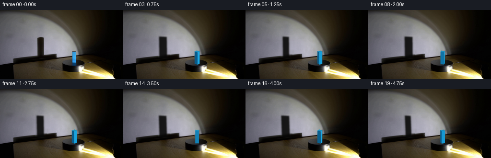
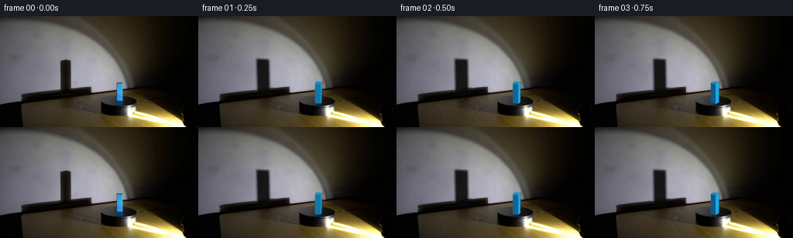
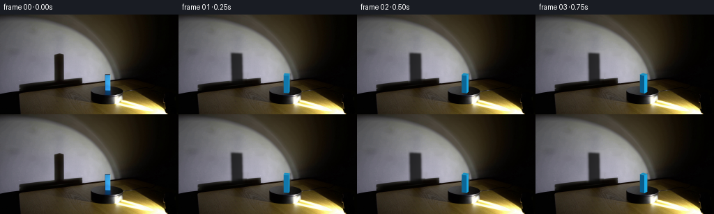
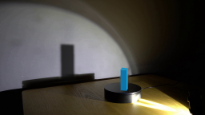

CODING AGENTS AS PIXEL WORLD MODELS
traex/GPT-5.6-Sol · 0073
点击播放 · 原生 RGB 像素
逐轮保存的候选
回放视频、检查图与代码变化。
每份候选均可单独播放。实际图片检查记录在下方工具轨迹中。
候选 01播放与检查图
点击播放 · 原生 RGB 像素
展开代码变化
--- 上一保存版本
+++ 本次保存版本
@@ -0,0 +1,206 @@
+from pathlib import Path
+import math
+import cv2
+import numpy as np
+from PIL import Image, ImageDraw
+import artifact_io
+
+CASE_DIR = Path(__file__).resolve().parent
+W, H = 256, 144
+N = 20
+
+
+def soft_polygon(shape, points, blur=0.0, supersample=4):
+ """Antialiased (optionally soft) polygon mask in [0,1]."""
+ h, w = shape
+ s = supersample
+ im = Image.new("L", (w*s, h*s), 0)
+ d = ImageDraw.Draw(im)
+ pts = [(int(round(x*s)), int(round(y*s))) for x, y in points]
+ d.polygon(pts, fill=255)
+ arr = np.asarray(im, dtype=np.float32) / 255.0
+ if blur > 0:
+ arr = cv2.GaussianBlur(arr, (0, 0), blur*s)
+ arr = cv2.resize(arr, (w, h), interpolation=cv2.INTER_AREA)
+ return np.clip(arr, 0, 1)
+
+
+def composite(frame, color, alpha):
+ a = np.asarray(alpha, np.float32)[..., None]
+ c = np.asarray(color, np.float32)
+ if c.ndim == 1:
+ c = c.reshape(1, 1, 3)
+ return np.clip(frame.astype(np.float32)*(1-a) + c*a, 0, 255).astype(np.uint8)
+
+
+def clean_wall_shadow(src):
+ """Remove only the upright block's old wall shadow, retaining the disk shadow."""
+ img = src.copy().astype(np.float32)
+ # The wall is smoothly lit. Interpolate across the old vertical shadow, row by row,
+ # from intact wall samples on both sides. A little neighboring texture prevents a flat patch.
+ x0, x1 = 73, 98
+ for y in range(52, 100):
+ # broad samples avoid the penumbra
+ left = src[y, 68:73].astype(np.float32).mean(axis=0)
+ right = src[y, 98:104].astype(np.float32).mean(axis=0)
+ for x in range(x0, x1):
+ u = (x - x0 + 1) / (x1 - x0 + 1)
+ # smoothstep follows the low-frequency spotlight gradient
+ u2 = u*u*(3-2*u)
+ val = left*(1-u2) + right*u2
+ # carry very faint wall grain from a nearby unshadowed column
+ sx = 68 + ((x-x0) % 5)
+ local_mean = src[y, 68:73].astype(np.float32).mean(axis=0)
+ grain = (src[y, sx].astype(np.float32)-local_mean)*0.22
+ img[y, x] = val + grain
+ # Feather only the patch boundary, not the surrounding image.
+ patch = img[50:102, 70:101].astype(np.uint8)
+ patch = cv2.GaussianBlur(patch, (3, 3), 0.55)
+ img[52:100, 73:98] = patch[2:50, 3:28]
+ return np.clip(img, 0, 255).astype(np.uint8)
+
+
+def clean_block(src):
+ """Remove the initial cuboid from wall/platform so it can be redrawn at new angles."""
+ out = src.copy()
+ mask = np.zeros((H, W), np.uint8)
+ # Tight mask: shaft and tiny top/right edges.
+ cv2.rectangle(mask, (149, 84), (161, 114), 255, -1)
+ # TELEA naturally continues the dark platform top below and dim wall above.
+ out = cv2.inpaint(out, mask, 3.0, cv2.INPAINT_TELEA)
+ # Restore stable platform rim pixels below the object from symmetric neighbors.
+ # Keep this restrainedâthe rotating block covers almost all of the inpainted seam.
+ for y in range(112, 116):
+ for x in range(150, 161):
+ u = (x-150)/10.0
+ out[y, x] = np.clip((1-u)*out[y, 147] + u*out[y, 164], 0, 255)
+ return out
+
+
+def block_geometry(theta):
+ """World and projected geometry for an upright square rectangular block."""
+ cx, cy = 155.0, 112.0
+ half = 3.65
+ # local square corners, counterclockwise in a top view
+ local = np.array([[-half,-half],[half,-half],[half,half],[-half,half]], np.float32)
+ c, s = math.cos(theta), math.sin(theta)
+ # positive theta rotates clockwise in the image's foreshortened platform plane
+ rot = np.array([[c, -s],[s, c]], np.float32)
+ world = local @ rot.T
+ # tabletop projection (farther is upward); tiny x/y cross-term matches camera perspective
+ def project(p, top=False):
+ x, y = float(p[0]), float(p[1])
+ return (cx + x + 0.08*y, cy + 0.37*y - (25.7 if top else 0.0))
+ bottom = [project(p, False) for p in world]
+ top = [project(p, True) for p in world]
+ return world, bottom, top
+
+
+def draw_block(frame, theta):
+ world, bottom, top = block_geometry(theta)
+ result = frame
+ # Draw visible side faces back-to-front. Camera is toward +Y and slightly +X.
+ view = np.array([0.20, 1.0], np.float32)
+ light = np.array([0.82, 0.58], np.float32)
+ faces = []
+ for i in range(4):
+ j = (i+1) % 4
+ edge = world[j] - world[i]
+ normal = np.array([edge[1], -edge[0]], np.float32)
+ normal /= max(float(np.linalg.norm(normal)), 1e-6)
+ facing = float(np.dot(normal, view))
+ if facing > -0.02:
+ depth = float((world[i,1] + world[j,1]) * 0.5)
+ lit = max(0.0, float(np.dot(normal, light)))
+ # saturated scientific blue, with physically readable face separation
+ color = np.array([10, 91, 137], np.float32) + lit*np.array([17, 77, 91], np.float32)
+ if facing < 0.10:
+ color *= 0.72
+ poly = [bottom[i], bottom[j], top[j], top[i]]
+ faces.append((depth, poly, tuple(np.clip(color,0,255))))
+ for _, poly, color in sorted(faces, key=lambda z: z[0]):
+ m = soft_polygon((H,W), poly, supersample=5)
+ result = composite(result, color, m)
+
+ # Top surface is visible as a slim foreshortened diamond.
+ top_color = (27, 143, 191)
+ mtop = soft_polygon((H,W), top, supersample=5)
+ result = composite(result, top_color, mtop)
+
+ # Fine dark edge on the least-lit silhouette and a restrained cyan top rim.
+ # These subpixel strokes make the tiny cuboid remain crisp after antialiasing.
+ overlay = Image.new("RGBA", (W*5, H*5), (0,0,0,0))
+ d = ImageDraw.Draw(overlay)
+ tp = [(round(x*5), round(y*5)) for x,y in top]
+ d.line(tp + [tp[0]], fill=(35,166,211,155), width=2, joint="curve")
+ rgba = np.asarray(overlay.resize((W,H), Image.Resampling.LANCZOS), dtype=np.uint8)
+ a = rgba[...,3].astype(np.float32)/255.0
+ result = composite(result, rgba[...,:3], a)
+ return result
+
+
+def shadow_mask(theta):
+ """Large perspective shadow of the upright cuboid on the rear wall."""
+ half = 3.65
+ local = np.array([[-half,-half],[half,-half],[half,half],[-half,half]], np.float32)
+ c, s = math.cos(theta), math.sin(theta)
+ rot = np.array([[c,-s],[s,c]], np.float32)
+ p = local @ rot.T
+ # Light sits low at frame right. Depth also shifts a corner's wall projection.
+ q = p[:,0] - 0.34*p[:,1]
+ lo, hi = float(q.min()), float(q.max())
+ mag = 1.43
+ center = 84.2 + 0.25*math.sin(theta)
+ xl, xr = center + mag*lo, center + mag*hi
+ # Slight perspective lean and unequal top/bottom widths.
+ top_y, bottom_y = 55.2, 101.0
+ lean = -1.0 + 0.55*math.sin(theta)
+ pts = [(xl+lean-0.5, top_y), (xr+lean+0.3, top_y+0.8),
+ (xr+0.4, bottom_y), (xl-0.2, bottom_y)]
+ core = soft_polygon((H,W), pts, blur=1.15, supersample=4)
+ # A faint broad penumbra from the finite spotlight aperture.
+ wide = cv2.GaussianBlur(core, (0,0), 2.25)
+ return np.clip(0.71*core + 0.12*wide, 0, 0.78)
+
+
+def add_platform_rotation_cue(frame, theta):
+ """Very subtle rotating surface sheen/scratch on the otherwise symmetric black disk."""
+ # Elliptical projection of a short, low-contrast radial surface mark.
+ cx, cy = 153.3, 106.7
+ a0 = theta - 1.05
+ r0, r1 = 6.0, 15.0
+ p0 = (cx + r0*math.cos(a0), cy + 0.34*r0*math.sin(a0))
+ p1 = (cx + r1*math.cos(a0), cy + 0.34*r1*math.sin(a0))
+ layer = Image.new("L", (W*4,H*4), 0)
+ d = ImageDraw.Draw(layer)
+ d.line([(int(p0[0]*4),int(p0[1]*4)),(int(p1[0]*4),int(p1[1]*4))], fill=80, width=2)
+ m = np.asarray(layer.resize((W,H),Image.Resampling.LANCZOS),np.float32)/255.0
+ # Confine to platform top ellipse and keep almost imperceptible.
+ yy,xx=np.mgrid[0:H,0:W]
+ inside=(((xx-cx)/22.0)**2+((yy-cy)/8.5)**2 <= 1.0).astype(np.float32)
+ return composite(frame, (52,52,48), m*inside*0.28)
+
+
+def generate():
+ src = np.asarray(Image.open(CASE_DIR / "first_frame.png").convert("RGB"), dtype=np.uint8)
+ assert src.shape == (H,W,3)
+ clean = clean_block(clean_wall_shadow(src))
+ frames = [src.copy()]
+ # 0.70 turn over the shot: steady, clear, real-time turntable motion.
+ total_angle = 2*math.pi*0.70
+ for i in range(1,N):
+ theta = total_angle * i/(N-1)
+ fr = clean.copy()
+ # Wall shadow lies behind all of the physical setup.
+ sm = shadow_mask(theta)
+ fr = composite(fr, (8,8,7), sm)
+ fr = add_platform_rotation_cue(fr, theta)
+ fr = draw_block(fr, theta)
+ frames.append(fr)
+ frames = np.stack(frames).astype(np.uint8)
+ assert np.array_equal(frames[0], src)
+ artifact_io.save(frames, CASE_DIR)
+
+
+if __name__ == "__main__":
+ generate()
候选 02播放与检查图
点击播放 · 原生 RGB 像素


展开代码变化
--- 上一保存版本
+++ 本次保存版本
@@ -160,7 +160,7 @@
core = soft_polygon((H,W), pts, blur=1.15, supersample=4)
# A faint broad penumbra from the finite spotlight aperture.
wide = cv2.GaussianBlur(core, (0,0), 2.25)
- return np.clip(0.71*core + 0.12*wide, 0, 0.78)
+ return np.clip(0.82*core + 0.12*wide, 0, 0.90)
def add_platform_rotation_cue(frame, theta):
可观测工具轨迹
实际执行的命令与返回图片。
命令 1exit 0
/bin/bash -lc "cat prompt.txt && printf '\\n--- GENERATION RULES ---\\n' && cat GENERATION_RULES.md"
命令 2exit 0
/bin/bash -lc "find . -maxdepth 2 -type f -printf '%p\\n' | sort && printf '\\n--- tools ---\\n' && command -v ffmpeg || true; command -v python3 || true; command -v convert || true"
命令 3exit 0
/bin/bash -lc 'cat artifact_io.py'
命令 4exit 0
/bin/bash -lc "python3 - <<'PY'
from PIL import Image
im=Image.open('first_frame.png')
print(im.mode,im.size)
print(im.getbbox())
PY"命令 5exit 0
/bin/bash -lc "python3 - <<'PY'
try:
import cv2; print('cv2',cv2.__version__)
except Exception as e: print('no cv2',e)
try:
import PIL; print('pillow',PIL.__version__)
except Exception as e: print('no PIL',e)
try:
import numpy; print('numpy',numpy.__version__)
except Exception as e: print('no numpy',e)
PY"命令 6exit 1
/bin/bash -lc "cat > generate.py <<'PY'
from pathlib import Path
import math
import cv2
import numpy as np
from PIL import Image, ImageDraw
import artifact_io
CASE_DIR = Path(__file__).resolve().parent
W, H = 256, 144
N = 20
def soft_polygon(shape, points, blur=0.0, supersample=4):
\"\"\"Antialiased (optionally soft) polygon mask in [0,1].\"\"\"
h, w = shape
s = supersample
im = Image.new(\"L\", (w*s, h*s), 0)
d = ImageDraw.Draw(im)
pts = [(int(round(x*s)), int(round(y*s))) for x, y in points]
d.polygon(pts, fill=255)
arr = np.asarray(im, dtype=np.float32) / 255.0
if blur > 0:
arr = cv2.GaussianBlur(arr, (0, 0), blur*s)
arr = cv2.resize(arr, (w, h), interpolation=cv2.INTER_AREA)
return np.clip(arr, 0, 1)
def composite(frame, color, alpha):
a = np.asarray(alpha, np.float32)[..., None]
c = np.asarray(color, np.float32).reshape(1, 1, 3)
return np.clip(frame.astype(np.float32)*(1-a) + c*a, 0, 255).astype(np.uint8)
def clean_wall_shadow(src):
\"\"\"Remove only the upright block's old wall shadow, retaining the disk shadow.\"\"\"
img = src.copy().astype(np.float32)
# The wall is smoothly lit. Interpolate across the old vertical shadow, row by row,
# from intact wall samples on both sides. A little neighboring texture prevents a flat patch.
x0, x1 = 73, 98
for y in range(52, 100):
# broad samples avoid the penumbra
left = src[y, 68:73].astype(np.float32).mean(axis=0)
right = src[y, 98:104].astype(np.float32).mean(axis=0)
for x in range(x0, x1):
u = (x - x0 + 1) / (x1 - x0 + 1)
# smoothstep follows the low-frequency spotlight gradient
u2 = u*u*(3-2*u)
val = left*(1-u2) + right*u2
# carry very faint wall grain from a nearby unshadowed column
sx = 68 + ((x-x0) % 5)
local_mean = src[y, 68:73].astype(np.float32).mean(axis=0)
grain = (src[y, sx].astype(np.float32)-local_mean)*0.22
img[y, x] = val + grain
# Feather only the patch boundary, not the surrounding image.
patch = img[50:102, 70:101].astype(np.uint8)
patch = cv2.GaussianBlur(patch, (3, 3), 0.55)
img[52:100, 73:98] = patch[2:50, 3:28]
return np.clip(img, 0, 255).astype(np.uint8)
def clean_block(src):
\"\"\"Remove the initial cuboid from wall/platform so it can be redrawn at new angles.\"\"\"
out = src.copy()
mask = np.zeros((H, W), np.uint8)
# Tight mask: shaft and tiny top/right edges.
cv2.rectangle(mask, (149, 84), (161, 114), 255, -1)
# TELEA naturally continues the dark platform top below and dim wall above.
out = cv2.inpaint(out, mask, 3.0, cv2.INPAINT_TELEA)
# Restore stable platform rim pixels below the object from symmetric neighbors.
# Keep this restrainedâthe rotating block covers almost all of the inpainted seam.
for y in range(112, 116):
for x in range(150, 161):
u = (x-150)/10.0
out[y, x] = np.clip((1-u)*out[y, 147] + u*out[y, 164], 0, 255)
return out
def block_geometry(theta):
\"\"\"World and projected geometry for an upright square rectangular block.\"\"\"
cx, cy = 155.0, 112.0
half = 3.65
# local square corners, counterclockwise in a top view
local = np.array([[-half,-half],[half,-half],[half,half],[-half,half]], np.float32)
c, s = math.cos(theta), math.sin(theta)
# positive theta rotates clockwise in the image's foreshortened platform plane
rot = np.array([[c, -s],[s, c]], np.float32)
world = local @ rot.T
# tabletop projection (farther is upward); tiny x/y cross-term matches camera perspective
def project(p, top=False):
x, y = float(p[0]), float(p[1])
return (cx + x + 0.08*y, cy + 0.37*y - (25.7 if top else 0.0))
bottom = [project(p, False) for p in world]
top = [project(p, True) for p in world]
return world, bottom, top
def draw_block(frame, theta):
world, bottom, top = block_geometry(theta)
result = frame
# Draw visible side faces back-to-front. Camera is toward +Y and slightly +X.
view = np.array([0.20, 1.0], np.float32)
light = np.array([0.82, 0.58], np.float32)
faces = []
for i in range(4):
j = (i+1) % 4
edge = world[j] - world[i]
normal = np.array([edge[1], -edge[0]], np.float32)
normal /= max(float(np.linalg.norm(normal)), 1e-6)
facing = float(np.dot(normal, view))
if facing > -0.02:
depth = float((world[i,1] + world[j,1]) * 0.5)
lit = max(0.0, float(np.dot(normal, light)))
# saturated scientific blue, with physically readable face separation
color = np.array([10, 91, 137], np.float32) + lit*np.array([17, 77, 91], np.float32)
if facing < 0.10:
color *= 0.72
poly = [bottom[i], bottom[j], top[j], top[i]]
faces.append((depth, poly, tuple(np.clip(color,0,255))))
for _, poly, color in sorted(faces, key=lambda z: z[0]):
m = soft_polygon((H,W), poly, supersample=5)
result = composite(result, color, m)
# Top surface is visible as a slim foreshortened diamond.
top_color = (27, 143, 191)
mtop = soft_polygon((H,W), top, supersample=5)
result = composite(result, top_color, mtop)
# Fine dark edge on the least-lit silhouette and a restrained cyan top rim.
# These subpixel strokes make the tiny cuboid remain crisp after antialiasing.
overlay = Image.new(\"RGBA\", (W*5, H*5), (0,0,0,0))
d = ImageDraw.Draw(overlay)
tp = [(round(x*5), round(y*5)) for x,y in top]
d.line(tp + [tp[0]], fill=(35,166,211,155), width=2, joint=\"curve\")
rgba = np.asarray(overlay.resize((W,H), Image.Resampling.LANCZOS), dtype=np.uint8)
a = rgba[...,3].astype(np.float32)/255.0
result = composite(result, rgba[...,:3], a)
return result
def shadow_mask(theta):
\"\"\"Large perspective shadow of the upright cuboid on the rear wall.\"\"\"
half = 3.65
local = np.array([[-half,-half],[half,-half],[half,half],[-half,half]], np.float32)
c, s = math.cos(theta), math.sin(theta)
rot = np.array([[c,-s],[s,c]], np.float32)
p = local @ rot.T
# Light sits low at frame right. Depth also shifts a corner's wall projection.
q = p[:,0] - 0.34*p[:,1]
lo, hi = float(q.min()), float(q.max())
mag = 1.43
center = 84.2 + 0.25*math.sin(theta)
xl, xr = center + mag*lo, center + mag*hi
# Slight perspective lean and unequal top/bottom widths.
top_y, bottom_y = 55.2, 101.0
lean = -1.0 + 0.55*math.sin(theta)
pts = [(xl+lean-0.5, top_y), (xr+lean+0.3, top_y+0.8),
(xr+0.4, bottom_y), (xl-0.2, bottom_y)]
core = soft_polygon((H,W), pts, blur=1.15, supersample=4)
# A faint broad penumbra from the finite spotlight aperture.
wide = cv2.GaussianBlur(core, (0,0), 2.25)
return np.clip(0.71*core + 0.12*wide, 0, 0.78)
def add_platform_rotation_cue(frame, theta):
\"\"\"Very subtle rotating surface sheen/scratch on the otherwise symmetric black disk.\"\"\"
# Elliptical projection of a short, low-contrast radial surface mark.
cx, cy = 153.3, 106.7
a0 = theta - 1.05
r0, r1 = 6.0, 15.0
p0 = (cx + r0*math.cos(a0), cy + 0.34*r0*math.sin(a0))
p1 = (cx + r1*math.cos(a0), cy + 0.34*r1*math.sin(a0))
layer = Image.new(\"L\", (W*4,H*4), 0)
d = ImageDraw.Draw(layer)
d.line([(int(p0[0]*4),int(p0[1]*4)),(int(p1[0]*4),int(p1[1]*4))], fill=80, width=2)
m = np.asarray(layer.resize((W,H),Image.Resampling.LANCZOS),np.float32)/255.0
# Confine to platform top ellipse and keep almost imperceptible.
yy,xx=np.mgrid[0:H,0:W]
inside=(((xx-cx)/22.0)**2+((yy-cy)/8.5)**2 <= 1.0).astype(np.float32)
return composite(frame, (52,52,48), m*inside*0.28)
def generate():
src = np.asarray(Image.open(CASE_DIR / \"first_frame.png\").convert(\"RGB\"), dtype=np.uint8)
assert src.shape == (H,W,3)
clean = clean_block(clean_wall_shadow(src))
frames = [src.copy()]
# 0.70 turn over the shot: steady, clear, real-time turntable motion.
total_angle = 2*math.pi*0.70
for i in range(1,N):
theta = total_angle * i/(N-1)
fr = clean.copy()
# Wall shadow lies behind all of the physical setup.
sm = shadow_mask(theta)
fr = composite(fr, (8,8,7), sm)
fr = add_platform_rotation_cue(fr, theta)
fr = draw_block(fr, theta)
frames.append(fr)
frames = np.stack(frames).astype(np.uint8)
assert np.array_equal(frames[0], src)
artifact_io.save(frames, CASE_DIR)
if __name__ == \"__main__\":
generate()
PY
python3 generate.py
python3 - <<'PY'
import numpy as np
from PIL import Image
z=np.load('pixels.npz')['pixels']
print('pixels tensor',z.shape,z.dtype)
a=np.asarray(Image.open('first_frame.png').convert('RGB'))
b=np.asarray(Image.open('frames/00.png').convert('RGB'))
print('frame00 exact:',np.array_equal(a,b),'max diff',np.abs(a.astype(int)-b.astype(int)).max())
PY"命令 7exit 0
/bin/bash -lc "python3 generate.py && python3 - <<'PY'
import numpy as np
from PIL import Image
z=np.load('pixels.npz')['pixels']
print('pixels tensor',z.shape,z.dtype)
a=np.asarray(Image.open('first_frame.png').convert('RGB'))
b=np.asarray(Image.open('frames/00.png').convert('RGB'))
print('frame00 exact:',np.array_equal(a,b),'max diff',np.abs(a.astype(int)-b.astype(int)).max())
print('outputs',len(list(__import__('pathlib').Path('frames').glob('*.png'))))
PY"命令 8exit 0
/bin/bash -lc "python3 - <<'PY'
from PIL import Image
import numpy as np
from pathlib import Path
fs=[np.asarray(Image.open(p).convert('RGB')) for p in sorted(Path('frames').glob('*.png'))]
for i in range(1,len(fs)):
d=np.abs(fs[i].astype(np.int16)-fs[i-1].astype(np.int16))
print(f'{i-1:02d}->{i:02d}: changed={(d.max(2)>0).sum():5d} MAE={d.mean():.3f} max={d.max()}')
PY"命令 9exit 0
/bin/bash -lc "python3 - <<'PY' from PIL import Image import numpy as np for f in ['first_frame.png','frames/01.png','frames/05.png']: a=np.asarray(Image.open(f)) print(f, 'shadow',a[70,84], 'wallL',a[70,70], 'wallR',a[70,104], 'block',a[95,155]) PY python3 -m py_compile generate.py ls -lh pixels.npz index.html inspection.png generate.py"
命令 10exit 0
/bin/bash -lc "python3 generate.py && python3 - <<'PY'
from PIL import Image
import numpy as np
from pathlib import Path
src=np.asarray(Image.open('first_frame.png').convert('RGB'))
frames=[]
for i in range(20):
p=Path('frames')/f'{i:02d}.png'
a=np.asarray(Image.open(p).convert('RGB'))
assert a.shape==(144,256,3) and a.dtype==np.uint8
frames.append(a)
assert np.array_equal(src,frames[0])
z=np.load('pixels.npz')['pixels']
assert z.shape==(144,256,20) and z.dtype==np.uint32
# Decode packed tensor and cross-check all rendered PNGs.
dec=np.stack([((z>>16)&255),((z>>8)&255),(z&255)],axis=-1).transpose(2,0,1,3).astype(np.uint8)
assert np.array_equal(dec,np.stack(frames))
print('PASS: 20 RGB frames, 256x144, frame 00 exact, packed artifact round-trip exact')
print('shadow center RGB f00/f01/f10:',frames[0][70,84],frames[1][70,84],frames[10][70,84])
PY"视觉工具实际返回图片 1

视觉工具实际返回图片 2

视觉工具实际返回图片 3

视觉工具实际返回图片 4

保存候选 2 份；完成命令 10 次；可验证图片返回 4 张。原始 API 响应与完整日志保留在本地。